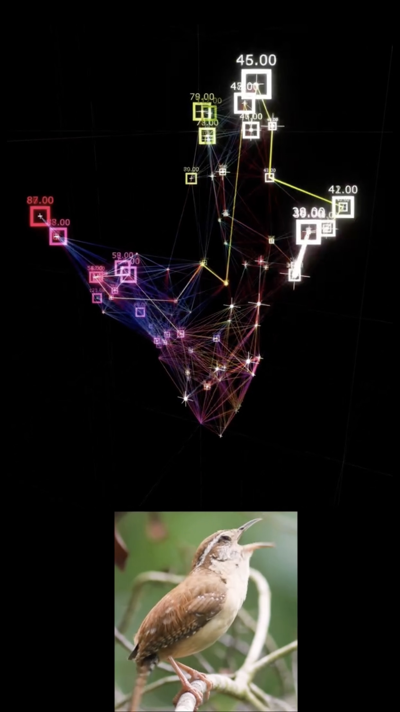

Lucio Arese
Media Art
1280 x 718
Created with Touchdesigner
2025
The song has a very defined and compact pattern
so I imagined it as a closed,
cyclic visual loop and tried to organize the visual system like that.
미국 남동부에서 흔히 서식하는 작은 새인 캐롤라이나굴뚝새(Carolina Wren)의 일상을 포착한다.
따뜻한 색감과 선명한 촬영 구도는 관찰자의 시선을 새의 움직임에 자연스럽게 이끈다.
짧은 영상임에도 불구하고 소리와 시각 정보가 조화롭게 구성되어 있어,
새가 지닌 생태적 특성과 자연 속 조화를 인상적으로 전달한다.
특히 오디오가 포함되어 있어 실제 울음소리나 주변 자연 환경음이 영상의 몰입도를 더욱 높인다.